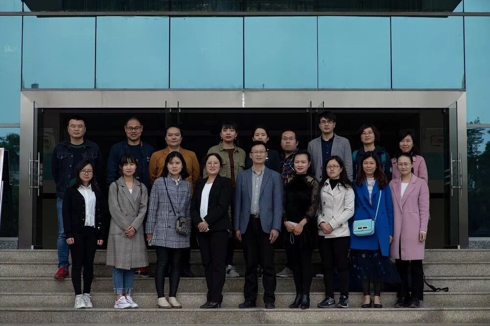

计算机科学与技术教研室
肖利群
曾 丽
李爱华
李 彦
蒲宗山
石 彬
王邦千
王 敏
杨开林
张德发
郑丽娟
白丽娜
物联网工程教研室
曾玉林
代 博
付琼芳
黄晓雪
蒋 涛
刘永娜
彭 瑗
谢治军
闫 鹏
赵钰婷
数字媒体技术教研室
陈 显
樊 玲
付 浩
黄 莉
兰海涛
邱 敏
王建凯
王 珂
吴文玲
鲍 金
于 婷
于子淞
李雨昕
公共基础教研室

王 满
杜文久
吴国胜
钱贺斌
杨 涛
李 倩
蔚茜茜
汪春江
付 裕
郑家会
冯树凯
孙海霞
沈艳霞
罗 琳
王先琴
陈 凯
余江妹
黄宜纯
武 进
肖成英
蒋海曦
刘凌玲
吴艳南
冯华容
×
New message